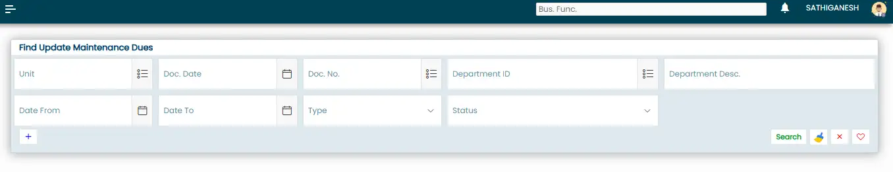
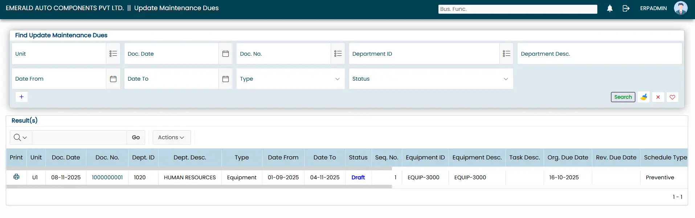
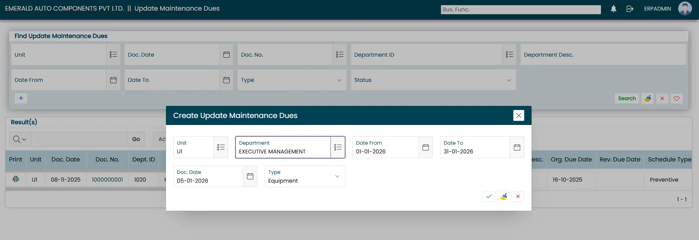
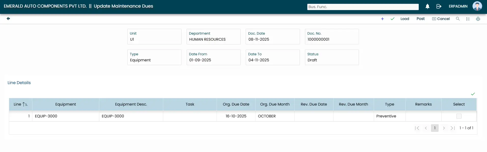

<div data-category="Plant Maintenance" data-title="Update Maintenance Dues" data-updated="January 27, 2026" data-contributors="RoadmapIT" data-breadcrumb="Home,Plant Maintenance,Update Maintenance Dues">
  <div class="page-content">
    <p>Maintenance due in plant maintenance is the term used to describe the time when a plant or equipment needs to undergo a scheduled or preventive maintenance activity. This is done to avoid unexpected failures, improve efficiency, and reduce costs. Maintenance dues can be updated for the equipment of every department by providing the From and To Date</p>
    <h5>Navigation path:</h5>
    <p class="fs-6">Plant Maintenance \ Transactions \ Update Maintenance Dues</p>
    
    <ul style="list-style-type: none; align-content: center">
      <li class="mouse-icon">Search screen displays the list of Maintenance dues with the relevant details and its status</li>
      <li class="mouse-icon">Click on Search to filter all the records</li>
    </ul>
    
    <ul style="list-style-type: none; align-content: center">
      <li class="mouse-icon">User can filter the respective documents by entering the search parameters at the header.</li>
      <li class="mouse-icon">On clicking search button, system displays the results relevant to the search parameters entered.</li>
      <li class="mouse-icon">
        Using
        
        icon, entered search parameters can be cleared.
      </li>
      <li class="mouse-icon">
        To close the screen, use
        <i class="bi bi-x fs-4 mx-2 text-danger"></i>
        icon
      </li>
      <li class="mouse-icon">
        By Clicking the
        <i class="bi bi-plus fs-4 mx-2 text-primary"></i>
        Add button we can create Update Maintenance dues for the required Equipment.
      </li>
    </ul>
    
    <ul style="list-style-type: none; align-content: center">
      <li class="mouse-icon">Enter/Select Unit.</li>
      <li class="mouse-icon">Enter/Select Department</li>
      <li class="mouse-icon">Enter/Select Date From and Date To</li>
      <li class="mouse-icon">Enter/Select Task</li>
      <li class="mouse-icon">
        Click on
        <i class="bi bi-check-lg fs-4 mx-1 text-success"></i>
        to create the Update Maintenance Due record
      </li>
    </ul>
    
    <ul style="list-style-type: none; align-content: center">
      <li class="mouse-icon">Enter/Select The Equipment</li>
      <li class="mouse-icon">Update the revised due date.</li>
      <li class="mouse-icon">
        Click on
        <i class="bi bi-check-lg fs-4 mx-1 text-success"></i>
        to Save the document.
      </li>
      <li class="mouse-icon">On clicking Post button, document can be sent for Workflow approval.</li>
    </ul>
  </div>
</div>
